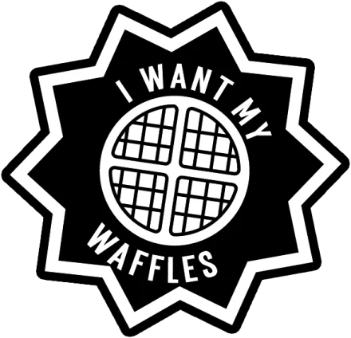
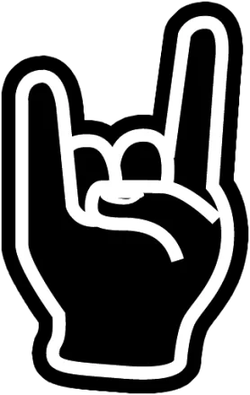
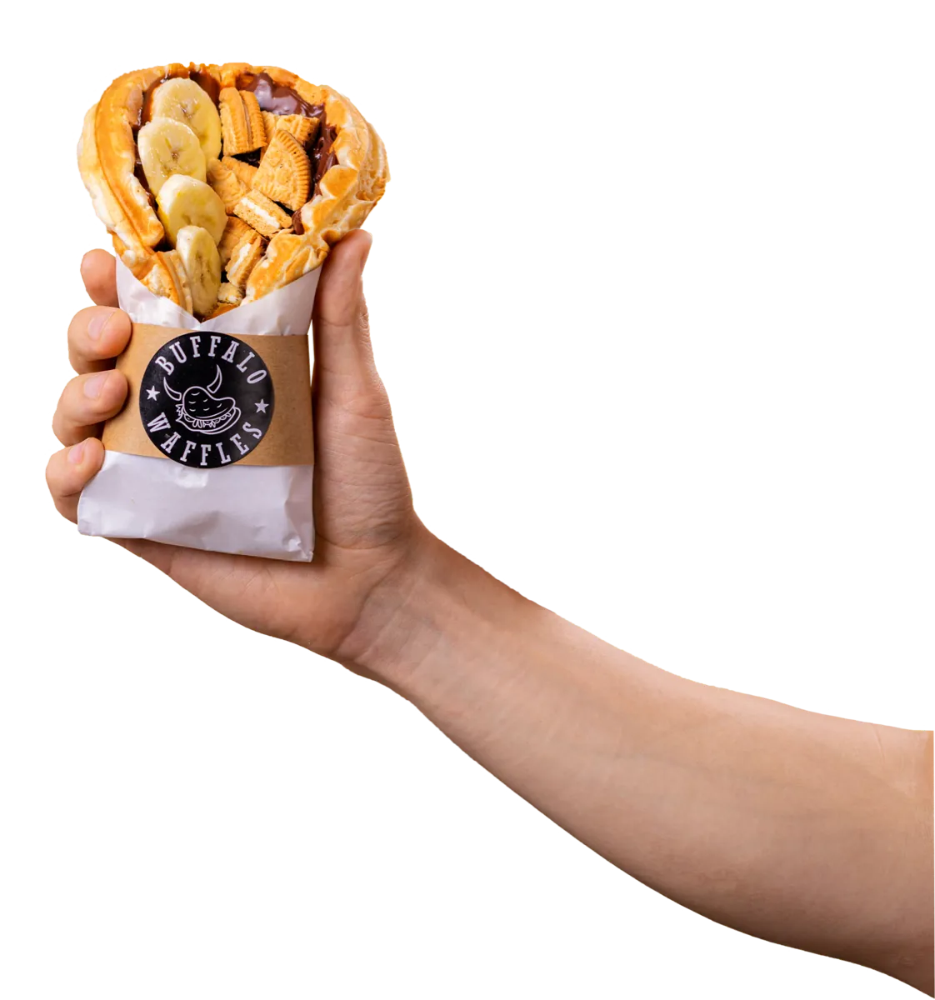
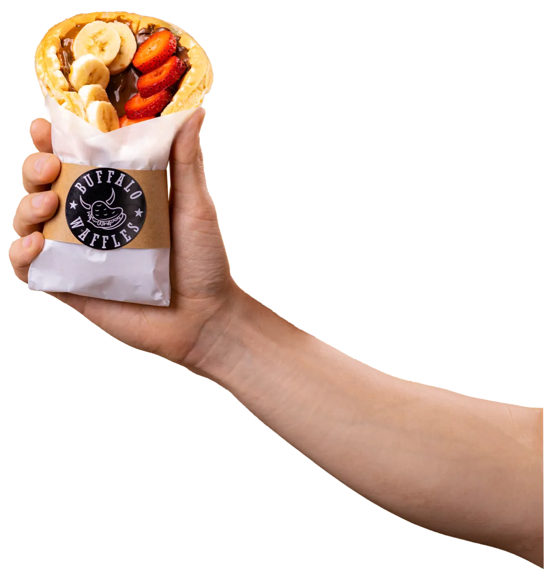

N.º 01 gratisFanzine de franquiciasBuffalo Waffles · Primavera 2026
Fanzine N.º 01 · Para futuros franquiciados
No buscamos compradores. Buscamos crew.
Buffalo Waffles tiene más de 50 locales1 en 11 regiones4. Los próximos los abren personas que elegimos con cuidado. Este fanzine es para que nos conozcas antes de postular, y para que sepas lo que vamos a querer saber de ti.
El test ¿Eres Buffalo? es la postulación: 6 preguntas y tus datos, unos 2 minutos.


La Crew · N.º 01Pág. 02
Manifiesto
Las 7 reglas de la crew.
Aquí se trabaja con sistema.La marca pone los estándares operativos y tú los sigues. Esa es la base de que un Buffalo se sienta igual en Arica y en Punta Arenas.
No necesitas venir de la cocina.Muchos franquiciados vienen de rubros completamente distintos. Lo que importa es el compromiso con la operación y la capacidad de gestión.
Puedes estar en el mesón o detrás de los números.Hay franquiciados que operan su local y otros que lo llevan con un administrador. En los dos casos, se siguen los indicadores de cerca.
Nadie anda solo.Cada KAM (consultor de franquicia) acompaña a un máximo de 10 franquiciados.
Firmamos para largo.El contrato de franquicia es de 5 años, renovable por 4 periodos.
Primero consolidas, después creces.Varios franquiciados han sumado más locales una vez consolidado el primero.
La marca la empujamos todos.El fondo de marketing (2 % de la venta neta) financia campañas para toda la red.

La Crew · N.º 01Pág. 04
Colecciónalas
Conoce a la crew.
Franquiciados reales con su local. Dale vuelta a cada carta para leer lo que dicen. Les vamos a pedir lo que un inversionista quiere saber: años en la red y un dato de negocio.
Crew BuffaloCarta 01
J[Foto con su local: pendiente]
JonathanBoulevard Marina · [ciudad]
«Ser parte de la red de franquicias de Buffalo Waffles ha significado trabajar junto a una marca que entrega confianza, cercanía y un verdadero acompañamiento en cada etapa.»
En la red desde
[año]
Formato
[a confirmar]
Dato de negocio
[pendiente]
Crew BuffaloCarta 02
E+A[Foto con su local: pendiente]
Eduardo y AlexMallplaza Iquique · Región de Tarapacá
«…hemos conseguido instalar un negocio exitoso que ha conectado con las personas de Iquique y esperamos dejar huellas en la región de Tarapacá.»
En la red desde
[año]
Formato
[a confirmar]
Dato de negocio
[pendiente]
Crew BuffaloCarta ??
?
TúTu local · tu ciudad
Esta carta se imprime cuando abres.
Postular es sacar tu carnet: 6 preguntas y tus datos. Después conversamos.
La red publica +40 socios franquiciados7. Sus cartas llegan en el próximo número.
Desliza para ver más cartas →
La Crew · N.º 01Pág. 06
Álbum oficial · Chile
El álbum: 11 de 16 láminas pegadas.
Cada lámina es una región. Las pegadas tienen locales Buffalo según el mapa publicado4; las que faltan, todavía no. Toca cualquiera.
Buffalo in da house · de Arica a Punta Arenas
11/16
Toca una lámina
Te contamos qué sabemos de esa región. Las zonas disponibles por comuna se publicarán con datos reales. [Estado por zona: disponible / pocas plazas / tomada]
Resultado modelado en base a un escenario promedio de un local tipo Módulo.
Resultados individuales pueden variar según ubicación, formato y gestión.
Desglose por formato (habilitación, equipamiento, m²) y capital propio mínimo: [pendiente].
La Crew · N.º 01Pág. 10
El proceso
Tu carnet tiene 7 timbres.
Así se entra a la crew. Cada etapa timbra tu carnet. Abres 3 a 6 meses desde la firma.
Crew Buffalo · Carnet de socio
Tu foto
Futuro franquiciado
N.º se asigna al firmar
Válido para: 1 local Buffalo · 5 años, renovable por 4 periodos
1✓2✓3✓4✓5✓6✓7✓
Postulas
Respondes el test ¿Eres Buffalo? y dejas tus datos. Es el formulario de interés.
Reunión de presentación
Te presentamos la franquicia y resolvemos tus dudas.
Evaluación
Revisamos tu perfil y tu capacidad de inversión.
Búsqueda y aprobación del local
Te acompañamos en la búsqueda, evaluación y negociación de la ubicación.
Firma de contratos
Firmas el contrato de franquicia: 5 años, renovable por 4 periodos.
3 a 6 meses
desde la firma hasta la apertura. Del timbre 1 al 5: [plazo típico a confirmar].
Capacitación y habilitación
Preparas el local y entrenas al equipo. Duración: [días u horas a confirmar].
Apertura
Abres tu Buffalo. Tu carta entra al mazo.
La Crew · N.º 01Pág. 12
Créditos de este número
El staff que te acompaña.
Antes, durante y después de la apertura. Así se reparte el trabajo.
Tu KAM
Consultor de franquicia. Acompaña a un máximo de 10 franquiciados. [Nombres o roles del equipo]
Capacitación
Inicial, para ti y tu equipo. [Días u horas a confirmar]
Apertura
Apoyo en la habilitación y la inauguración. [Qué incluye]
Local
Búsqueda, evaluación y negociación de ubicaciones con los estándares de la marca.
Marketing
Campañas digitales, promociones y posicionamiento para toda la red.
Operación
Manuales operativos, soporte operacional y acceso a proveedores homologados.
Producto
Desarrollo de productos nuevos para la carta.
Seguimiento
Seguimiento permanente del negocio y asesoría comercial.
La Crew · N.º 01Pág. 14
Correo de lectores
Querida crew: tengo preguntas.

Las preguntas que más nos llegan antes de postular. Abre la carta para leer la respuesta.
Pregunta frecuente · Inversión¿Cuánto cuesta abrir una franquicia de Buffalo Waffles?Inversión
La inversión inicial total depende del formato y de la ubicación, pero en general parte en $43.000.000. Incluye el derecho de franquicia ($10.000.000) y el capital de trabajo ($3.000.000). Considera también la habilitación del local, el equipamiento, la capacitación y lo necesario para empezar a operar.
Pregunta frecuente · Operación¿Necesito experiencia en gastronomía?Operación
No. Muchos franquiciados vienen de rubros completamente distintos. Lo importante es el compromiso con la operación, la capacidad de gestión y las ganas de hacer crecer el negocio.
Pregunta frecuente · Inversión¿Puedo tenerla como inversión y contratar a un administrador?Inversión
Sí. Hay franquiciados que operan el local y otros que lo administran a través de un encargado. En ambos casos, recomendamos seguir de cerca los indicadores del local.
Pregunta frecuente · Proceso¿Qué requisitos debo cumplir para postular?Proceso
Buscamos personas con capacidad de inversión, compromiso con la marca, orientación comercial y disposición para seguir los estándares operativos establecidos.
Pregunta frecuente · Operación¿Cuántas personas necesito para operar un local?Operación
Depende del formato y del volumen de ventas. En términos generales, 2 personas full time de lunes a viernes y 2 part time el fin de semana.
Pregunta frecuente · Proceso¿Puedo abrir en cualquier ciudad de Chile?Proceso
Buscamos crecer en distintas regiones. Evaluamos cada caso según el potencial comercial de la zona, la cobertura actual de la marca y la disponibilidad territorial.
Pregunta frecuente · Operación¿La marca hace marketing?Operación
Sí. Buffalo Waffles desarrolla campañas digitales, promociones y acciones de posicionamiento que benefician a toda la red, financiadas con el fondo de marketing (2 % de la venta neta).
Pregunta frecuente · Inversión¿Puedo abrir más de una franquicia?Inversión
Sí. Varios franquiciados han sumado nuevos locales una vez consolidada su primera operación.
Pregunta frecuente · Operación¿Cómo se generan las ventas?Operación
Con clientes presenciales y por plataformas de delivery, lo que diversifica los ingresos y aprovecha distintos momentos de consumo.
Pregunta frecuente · Contrato¿Qué hace diferente a Buffalo Waffles?Marca
Es una marca chilena, cercana y dinámica, con identidad propia, un modelo de negocio probado y un equipo que acompaña a los franquiciados en cada etapa. Más que una franquicia, buscamos construir una comunidad de emprendedores que crecen junto a la marca.